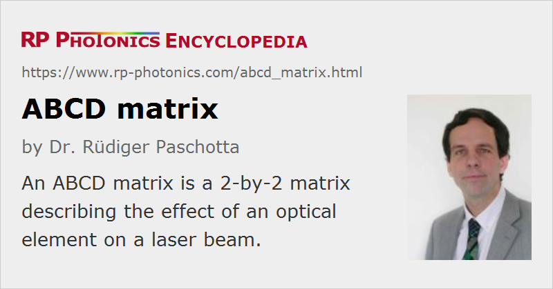

ABCD Matrix
Definition: a 2-by-2 matrix describing the effect of an optical element on a laser beam
Alternative term: ray transfer matrix
German: ABCD-Matrix
Categories: general optics, methods
How to cite the article; suggest additional literature
Author: Dr. Rüdiger Paschotta
An ABCD matrix or ray transfer matrix [1] is a 2-by-2 matrix associated with an optical element which can be used for describing the element's effect on a laser beam. It can be used both in ray optics, where geometrical rays are propagated, and for propagating Gaussian beams. The paraxial approximation is always required for ABCD matrix calculations, i.e., the involved beam angles or divergence angles must stay small for the calculations to be accurate.
Ray Optics
Originally, the concept was developed in geometrical optics for calculating the propagation of light rays with some transverse offset r and offset angle θ from a reference axis (Figure 1). As long as the angles involved are small enough (→ paraxial approximation), there is a linear relation between the r and θ coordinates before and after an optical element. The following equation can then be used for calculating how these parameters are modified by an optical element:
where the primed quantities (left-hand side) refer to the beam after passing the optical component. The ABCD matrix is a characteristic of each optical element.
For example, a thin lens with focal length f has the following ABCD matrix:
This shows that the offset r remains unchanged, whereas the offset angle θ experiences a change in proportion to r.
Propagation through free space over a distance d is associated with the matrix
which shows that the angle remains unchanged, whereas the beam offset is increasing or decreasing according to the angle.
Further examples for ABCD matrices are given below.
For situations where beams propagate through dielectric media, it is convenient to use a modified kind of beam vectors, where the lower component (the angle) is multiplied by the refractive index. This can somewhat simplify the ABCD matrices for certain situations.
Propagation of Gaussian Beams
ABCD matrices can also be used for calculating the effect of optical elements on the parameters of a Gaussian beam. A convenient quantity for that purpose is the complex q parameter, which contains information on both the beam radius w and the radius of curvature R of the wavefronts:
The following equation shows how the q parameter is modified by an optical element:
ABCD Matrices of Important Optical Elements
The following list gives the ABCD matrices of frequently used optical elements.
Air space with length d:
(For propagation in a transparent medium, the length d has to be divided by the refractive index n, if the above mentioned modified definition is used where the lower component (the angle) is multiplied by the refractive index.)
Lens with focal length f (where positive f applies for a focusing lens):
Curved mirror with curvature radius R (>0 for concave mirror), incidence angle θ in the horizontal plane:
with Re = R cos θ in the tangential plane (horizontal direction) and Re = R / cos θ in the sagittal plane (vertical direction).
Duct:
where the radially varying refractive index is:
Various textbooks (see e.g. Ref. [4]) specify the ABCD matrices for other types of optical components.
Combining Multiple Optical Elements
If a beam propagates through several optical elements (including any air spaces in between), this means that the (r θ) vector is subsequently multiplied by various matrices. Instead, a single matrix may be used, which is the matrix product of all the single matrices. Note that the first optical element must be on the right-hand side of that product – matrix multiplications are not commutative, and the same holds for optical elements.
Example:
- combined matrix for free-space propagation length with distance d, followed by a lens with focal length f:
- combined matrix for a lens with focal length f, followed by free-space propagation length with distance d:
Typical Applications
Some typical applications of the ABCD matrix algorithm are:
- It is often of interest how a laser beam propagates through some optical setup. Both the geometric path of a ray and the evolution of the beam radius can be calculated.
- The changes of beam parameters within one complete round trip in a resonator can be described with an ABCD matrix. The transverse resonator modes can then be obtained from the matrix components.
- An extended algorithm, involving an ABCDEF matrix (a 3-by-3 matrix with some constant components), can be used for calculating the alignment sensitivity of a laser resonator [3].
The ABCD matrix method should not be confused with a different matrix method for calculating the reflection and transmission properties of dielectric multilayer coatings.
Questions and Comments from Users
Here you can submit questions and comments. As far as they get accepted by the author, they will appear above this paragraph together with the author’s answer. The author will decide on acceptance based on certain criteria. Essentially, the issue must be of sufficiently broad interest.
Please do not enter personal data here; we would otherwise delete it soon. (See also our privacy declaration.) If you wish to receive personal feedback or consultancy from the author, please contact him e.g. via e-mail.
By submitting the information, you give your consent to the potential publication of your inputs on our website according to our rules. (If you later retract your consent, we will delete those inputs.) As your inputs are first reviewed by the author, they may be published with some delay.
Bibliography
| [1] | H. Kogelnik and T. Li, “Laser beams and resonators”, Appl. Opt. 5 (10), 1550 (1966), doi:10.1364/AO.5.001550 |
| [2] | P. A. Bélanger, “Beam propagation and the ABCD ray matrices”, Opt. Lett. 16 (4), 196 (1991), doi:10.1364/OL.16.000196 |
| [3] | O. E. Martínez, “Matrix formalism for dispersive laser cavities”, IEEE J. Quantum Electron. 25 (3), 296 (1989), doi:10.1109/3.18543 |
| [4] | A. E. Siegman, Lasers, University Science Books, Mill Valley, CA (1986) |
See also: geometrical optics, paraxial approximation, Gaussian beams, resonator modes, resonator design, beam pointing fluctuations
and other articles in the categories general optics, methods
|  |
If you like this page, please share the link with your friends and colleagues, e.g. via social media:
These sharing buttons are implemented in a privacy-friendly way!